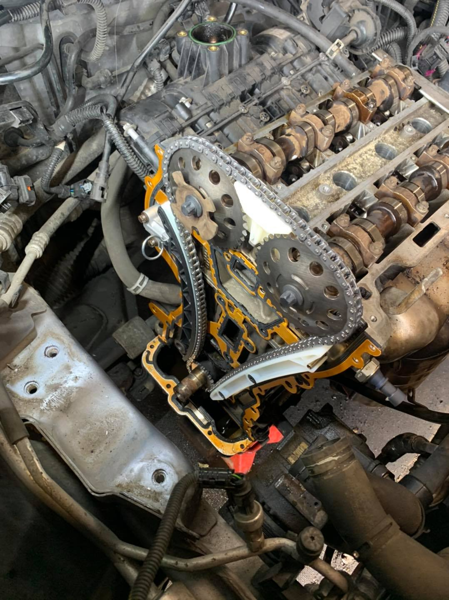
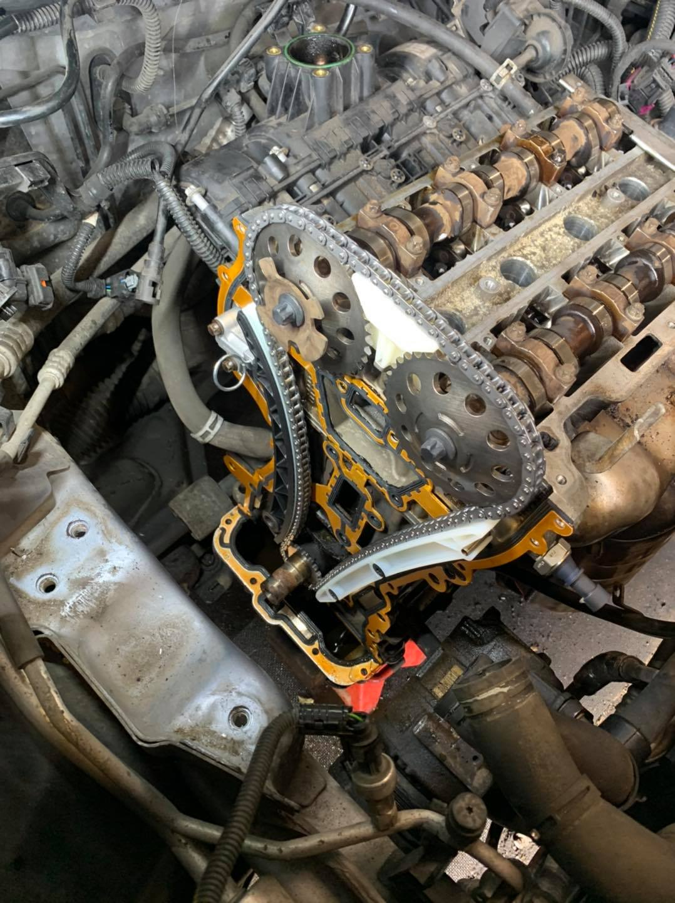

Jack Taylor
Co-Owner / Head Mechanic
I've worked on small and large engines for over 12 years, which has enabled me to develop a wide variety of maintenance and repair skills that more than qualify me for the position. I am passionate about learning about new maintenance techniques, and I enjoy learning how to maintain different engines and vehicles.
Andy
Team Mechanic
In my previous role as a mechanic, I was responsible for diagnosing engine repair needs and providing customer quotes for maintenance repairs. Due to my relentless pursuit of providing high-quality maintenance services and providing top-tier customer support, customers consistently requested me to work on their vehicles
Murrell Taylor
Co-Owner / Mechanic
Semi-Retired Jaguar specialist and a Mechanic of 45 years, Entrapreneur of two Mechanic garages including a self built garage on private land
Gallery
 
